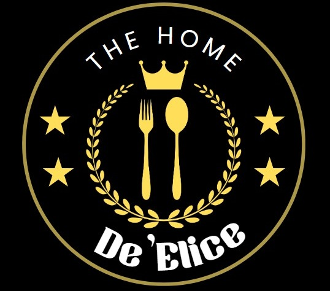

The Home de Élice
Bienvenido
Inicio
Perfil
Recetas
Lugares
Referencias
Preguntas
...............................
Preguntas Frecuentes
Pierre Gagnaire
¿Cuál es el plato insignia de Pierre Gagnaire?
¿Cómo describiría su estilo culinario?
¿Qué lo inspira a crear nuevos platos?
¿Cuáles son los ingredientes favoritos que utiliza en su cocina?
Martín Berasategui
¿Qué caracteriza a la cocina de Martín Berasategui?
¿Cómo ha evolucionado su cocina a lo largo de los años?
¿Cuál es su restaurante más recomendado?
¿Qué consejo daría a los aspirantes a chef?
Anne-Sophie Pic
¿Cómo describiría la experiencia en Maison Pic?
¿Qué la motiva a seguir innovando en la cocina?
¿Cuáles son sus platos más destacados?
¿Cómo mantiene la autenticidad de sus restaurantes en diferentes ubicaciones?
...............................